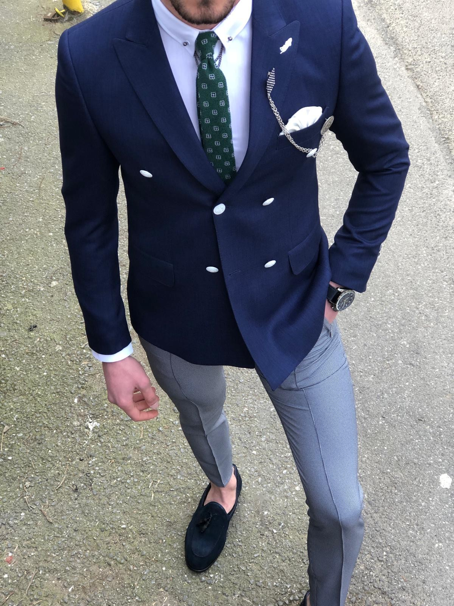

Olowu Oluwaseun
One
Two
Three
Favourite Food
Pounded Yam
Rice and Beans
Yam
Archievement
Progress in This course
Progress in specialization
Progress in Life
More About me
I was born in Ilorin Kwara State Nigeria.
My Childhood
